Inhalt Index DeskTop Bronstein

 Differentialgleichungen Gewöhnliche Differentialgleichungen Differentialgleichungen 1. Ordnung Singuläre Integrale und singuläre Punkte
Differentialgleichungen Gewöhnliche Differentialgleichungen Differentialgleichungen 1. Ordnung Singuläre Integrale und singuläre Punkte


Singuläre Punkte einer Differentialgleichung sind Punkte, in denen die rechte Seite der Differentialgleichung
| y' = f(x,y) | (9.18a) |
nicht definiert ist. Diese Situation tritt z.B. in Differentialgleichungen der folgenden Formen auf:
| 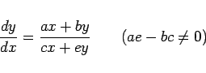 | (9.18b) |
besitzt im Punkt (0,0) einen isolierten singulären Punkt, da die Bedingungen des Existenzsatzes lediglich in jedem beliebig nahe an (0,0) gelegenen Punkt gelten, nicht aber in diesem selbst. Streng genommen sind die genannten Bedingungen in diesem Falle für alle Punkte nicht erfüllt, für die cx + ey = 0 ist. Die Erfüllung der Bedingungen kann dadurch erzwungen werden, daß die Rolle der abhängigen und unabhängigen Variablen vertauscht und die Gleichung
| 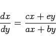 | (9.18c) |
betrachtet wird.
Das Verhalten der Integralkurven in der Nähe des singulären Punktes hängt von den Wurzeln der charakteristischen Gleichung
| 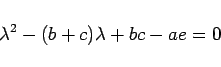 | (9.18d) |
ab. Dabei können die folgenden Fälle unterschieden werden:
| Beispiel A |
|
Für die Differentialgleichung 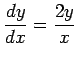 lautet die charakteristische Gleichung 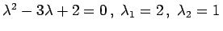. Die Integralkurven gehorchen der Gleichung y = C x2 (s. Abbildung). Die Gerade x = 0 ist in der allgemeinen Lösung ebenfalls enthalten, was aus der Form x2 = C1y hervorgeht. |
| Beispiel B |
|
Die charakteristische Gleichung für 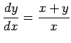 lautet 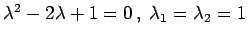. Integralkurven sind 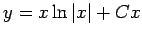 (s. Abbildung). Der singuläre Punkt ist ein sogenannter Knotenpunkt. |
| Beispiel C |
|
Die charakteristische Gleichung für 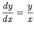 lautet . Integralkurven sind y = C x (s. Abbildung). Der singuläre Punkt ist ein sogenannter Strahlpunkt. |
| Beispiel D |
|
Die charakteristische Gleichung für 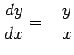 lautet 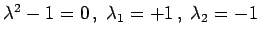. Integralkurven sind x y = C (s. Abbildung). Für C = 0 gibt es die partikulären Integrale 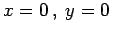. |
| Beispiel E |
|
Die charakteristische Gleichung für 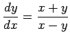 ist 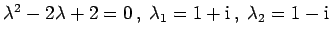. Integralkurven in Polarkoordinaten sind 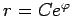 (s. Abbildung). |
| Beispiel F |
|
Die charakteristische Gleichung für 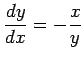 ist 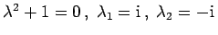. Integralkurven sind x2+y2=C (s. Abbildung). |
besitzt singuläre Punkte für Werte der Variablen, für die
| P(x,y) = Q(x,y) = 0 | (9.19b) |
gilt. Wenn P und Q stetige Funktionen sind, die stetige partielle Ableitungen besitzen, dann kann (9.19a) in der Form
| 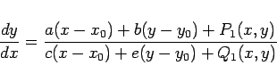 | (9.19c) |
dargestellt werden. Dabei sind x0 und y0 die Koordinaten des singulären Punktes, und die Werte von P1(x,y) sowie Q1(x,y) müssen infinitesimal von höherer Ordnung im Vergleich zum Abstand des Punktes (x,y) vom singulären Punkt (x0,y0) sein. Unter diesen Voraussetzungen ist die Art der singulären Punkte der gegebenen Differentialgleichung die gleiche wie für den singulären Punkt der Näherungsgleichung, die durch Weglassen von P1 und Q1 entsteht. Dazu gibt es die folgenden Ausnahmen: